05: Classification: Putting a Label on Things
References
Documentation
Deep Learning Frameworks
Books
- Python Data Science Handbook - Jake VanderPlas (free online)
- Hands-On Machine Learning - Aurélien Géron
- Introduction to Statistical Learning - James, Witten, Hastie, Tibshirani (free PDF)
- Interpretable Machine Learning - Christoph Molnar (free online)
Tutorials & Articles
- A Visual Introduction to Machine Learning
- ROC Curves Explained - Google ML Crash Course
- How to Evaluate Classification Models - edlitera
- ML Models for Classification - tour of methods
- Logistic Regression using Gradient Descent - Kaggle
- XGBoost vs Random Forest - Geek Culture
- Interpretable ML with XGBoost - Towards Data Science
- Unsupervised Learning: Algorithms and Examples - AltexSoft
- Environment and Distribution Shift - Dive into Deep Learning
Health Data Examples
- Cancer Classification (EDA, PCA, Random Forest) - Kaggle
- XGBoost, Random Forest, and Nomograph for Disease Severity Prediction - Frontiers
- Prediction Method for Hypertension - Diagnostics Journal
Crash Course in Classification
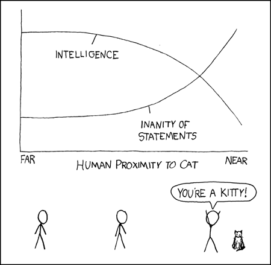
The building blocks of ML are algorithms for regression and classification:
- Regression: predicting continuous quantities
- Classification: predicting discrete class labels (categories)
Classification Methods
Classification algorithms learn to assign labels to data points based on their features. In health data, this might mean predicting whether a patient has a disease based on lab results.
Reference Card: Common Classification Methods
| Method | Description | Strengths |
|---|---|---|
| Logistic Regression | Linear model for binary outcomes | Easy to interpret, fast |
| Decision Trees | Tree structure, splits data by feature values | Intuitive but can overfit |
| Random Forest | Many decision trees combined | More robust, less overfitting |
| Support Vector Machines (SVM) | Finds the best boundary between classes | Good for complex data |
| Naive Bayes | Probabilistic, assumes features are independent | Fast and simple |
| Neural Networks | Layers of nodes, can model complex patterns | Powerful but less interpretable |
Model Evaluation
There are many more classification approaches than data scientists, so choosing the best one for your application can be daunting. Thankfully, all of them output predicted classes for each data point. We can use this similarity to define objective performance criteria based on how often the predicted class matches the underlying truth.
I get in trouble with the data science police if I don’t include something about confusion matrices:
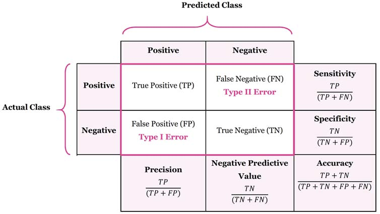
Precision (Positive Predictive Value) = \(\frac{TP}{TP + FP}\)
How well it performs when it predicts positive
Recall (Sensitivity, True Positive Rate) = \(\frac{TP}{TP+FN}\)
How well it performs among actual positives
Accuracy = \(\frac{(TP+TN)}{(TP+FP+FN+TN)}\)
How well it performs among all known classes
F1 score = \(2 \times \frac{Recall \times Precision}{Recall + Precision}\)
Balanced score for overall model performance
Specificity (Selectivity, True Negative Rate) = \(\frac{TN}{TN + FP}\)
Similar to Recall, how well it performs among actual negatives
Miss Rate (False Negative Rate) = \(\frac{FN}{TP + FN}\)
Proportion of positives that were incorrectly classified, good measure when missing a positive has a high cost
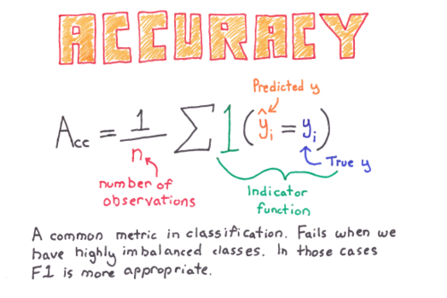
Reference Card: confusion_matrix
| Component | Details |
|---|---|
| Function | sklearn.metrics.confusion_matrix() |
| Purpose | Compute confusion matrix to evaluate classification accuracy |
| Key Parameters | • y_true: Ground truth target values• y_pred: Estimated targets from classifier• labels: List of labels to index the matrix• normalize: Normalize over ‘true’, ‘pred’, ‘all’, or None |
| Returns | Array where rows are actual, columns are predicted |
Code Snippet: Confusion Matrix
from sklearn.metrics import confusion_matrix
y_true = [1, 0, 1, 1, 0] # Actual labels
y_pred = [1, 0, 0, 1, 1] # Predicted labels
cm = confusion_matrix(y_true, y_pred)
print(cm)
## Output interpretation (for binary case):
## [[TN, FP],
## [FN, TP]]Classification Report
The classification_report function provides a comprehensive summary of precision, recall, and F1-score for each class in a single call—essential for evaluating multi-class models.
Reference Card: classification_report
| Component | Details |
|---|---|
| Function | sklearn.metrics.classification_report() |
| Purpose | Build a text report showing main classification metrics per class |
| Key Parameters | • y_true: Ground truth target values• y_pred: Estimated targets from classifier• target_names: Display names for classes• output_dict: Return dict instead of string |
| Returns | String (or dict) with precision, recall, F1-score, support per class |
Code Snippet: Classification Report
from sklearn.metrics import classification_report
y_true = [0, 0, 1, 1, 1, 2, 2]
y_pred = [0, 1, 1, 1, 0, 2, 2]
print(classification_report(y_true, y_pred, target_names=['No Disease', 'Mild', 'Severe']))
## precision recall f1-score support
##
## No Disease 0.50 0.50 0.50 2
## Mild 0.67 0.67 0.67 3
## Severe 1.00 1.00 1.00 2
##
## accuracy 0.71 7
## macro avg 0.72 0.72 0.72 7
## weighted avg 0.71 0.71 0.71 7ROC Curve and AUC
An ROC curve (Receiver Operating Characteristic curve) shows how a classifier’s performance changes as you vary the threshold for predicting “positive.” It plots:
- True Positive Rate (TPR) (a.k.a. recall): How many actual positives did we catch?
- TPR (Recall): \(TPR = \frac{TP}{TP + FN}\)
- False Positive Rate (FPR): How many actual negatives did we incorrectly call positive?
- FPR: \(FPR = \frac{FP}{FP + TN}\)
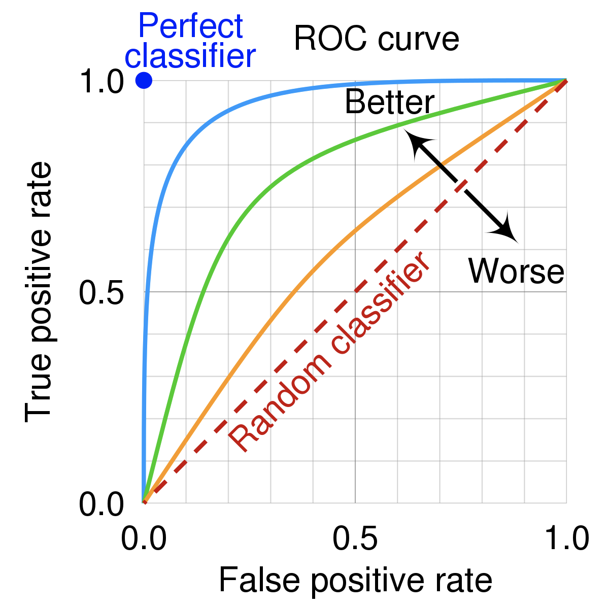
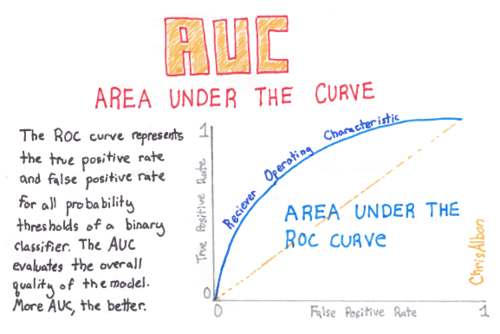
Reference Card: roc_curve and roc_auc_score
| Component | Details |
|---|---|
roc_curve() |
Returns FPR, TPR, and thresholds for plotting |
roc_auc_score() |
Returns the Area Under the ROC Curve |
| Key Parameters | • y_true: True binary labels• y_score: Probability estimates (use predict_proba()[:, 1]) |
| Interpretation | AUC = 0.5 is random guessing; AUC = 1.0 is perfect |
Code Snippet: ROC and AUC
from sklearn.metrics import roc_curve, roc_auc_score
y_true = [0, 0, 1, 1]
y_scores = [0.1, 0.4, 0.35, 0.8] # Model probabilities
fpr, tpr, thresholds = roc_curve(y_true, y_scores)
auc_score = roc_auc_score(y_true, y_scores)
print(f"AUC Score: {auc_score}") # Output: AUC Score: 0.75AUC is desirable for two reasons:
- AUC is scale-invariant. It measures how well predictions are ranked, rather than their absolute values.
- AUC is classification-threshold-invariant. It measures the quality of the model’s predictions irrespective of what classification threshold is chosen.
However, both these reasons come with caveats:
- Scale invariance is not always desirable. Sometimes we need well calibrated probability outputs, and AUC won’t tell us about that.
- Classification-threshold invariance is not always desirable. In cases where there are wide disparities in the cost of false negatives vs. false positives, AUC isn’t the right metric.
Supervised vs. Unsupervised
There are two(-ish) overarching categories of classification algorithms: supervised and unsupervised. There are many possible approaches in each category, and some that work well in both (deep learning, for example).
- Supervised - uses labeled datasets with known classes for the data points
- Unsupervised - uses unlabeled data to uncover organizational patterns
- Semi-supervised - some data with labels is used to extract relevant features, while others without can amplify that signal; e.g., medical images (x-ray, CT)
Supervised Models
To fairly evaluate each model, we must test its performance on different data than it was trained on. So we split our dataset into two partitions: test and train:
- Train - data used to fit the model(s)
- Validation - data used to tune hyperparameters, compare models, and select the best one
- Test - final holdout data, touched only once to evaluate the selected model
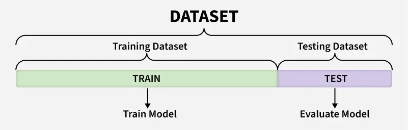
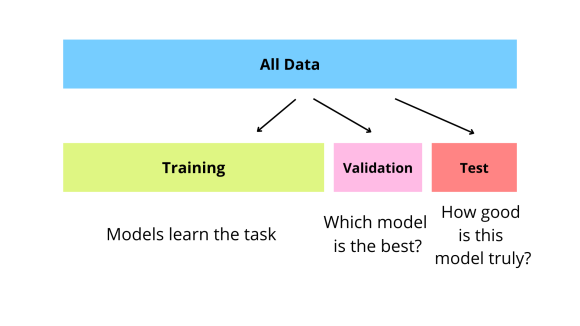
A note on terminology: The standard convention is train/validation/test, where validation is used for model development and test is the final holdout. However, sklearn’s function is called
train_test_split()and cross-validation literature often refers to “test folds”—so you’ll see some inconsistency in practice. We’ll follow the standard: validation for tuning/selection, test for final evaluation.
Reference Card: train_test_split
| Component | Details |
|---|---|
| Function | sklearn.model_selection.train_test_split() |
| Purpose | Split arrays into random train and test subsets |
| Key Parameters | • test_size: Proportion for test (default 0.25)• random_state: Seed for reproducibility• stratify: Preserve class ratios in splits (pass y for classification) |
| Returns | X_train, X_test, y_train, y_test |
Tip: Always use
stratify=yfor classification tasks—especially with imbalanced classes—to ensure both train and test sets have similar class distributions.
Code Snippet: Train/Test Split
from sklearn.model_selection import train_test_split
import numpy as np
X = np.array([[1, 2], [2, 3], [3, 4], [4, 5], [5, 6], [6, 7]])
y = np.array([0, 1, 0, 1, 0, 1])
X_train, X_test, y_train, y_test = train_test_split(
X, y, test_size=0.3, random_state=42, stratify=y
)
print("X_train shape:", X_train.shape)
print("X_test shape:", X_test.shape)Cross-Validation for Model Comparison
A single train/test split can be misleading if the split happens to be particularly easy or hard. Cross-validation provides more robust performance estimates by training and testing on multiple different splits of the data.
K-Fold Cross-Validation:
- Split data into k equal parts (folds)
- Train on k-1 folds, test on the remaining fold
- Repeat k times, each fold serving as test once
- Average the results for final performance estimate
Reference Card: cross_val_score
| Component | Details |
|---|---|
| Function | sklearn.model_selection.cross_val_score() |
| Purpose | Evaluate model with cross-validation, returning scores for each fold |
| Key Parameters | • estimator: Model to evaluate• X, y: Features and labels• cv: Number of folds or CV splitter• scoring: Metric to use (‘accuracy’, ‘f1’, ‘roc_auc’) |
| Returns | Array of scores, one per fold |
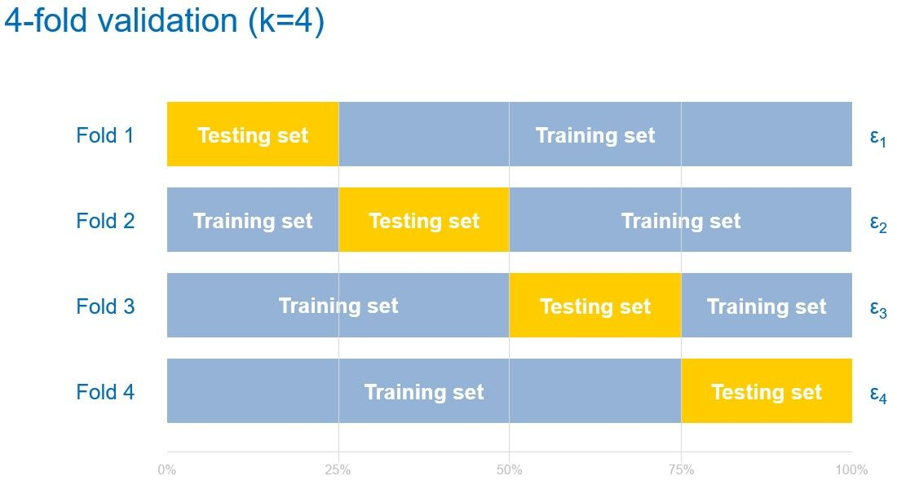
Code Snippet: Cross-Validation
from sklearn.model_selection import cross_val_score, StratifiedKFold
from sklearn.ensemble import RandomForestClassifier
import numpy as np
X = np.random.randn(100, 5)
y = np.random.randint(0, 2, 100)
model = RandomForestClassifier(n_estimators=50, random_state=42)
## Simple 5-fold cross-validation
scores = cross_val_score(model, X, y, cv=5, scoring='f1')
print(f"F1 scores per fold: {scores}")
print(f"Mean F1: {scores.mean():.3f} (+/- {scores.std() * 2:.3f})")Reference Card: StratifiedKFold
| Component | Details |
|---|---|
| Function | sklearn.model_selection.StratifiedKFold() |
| Purpose | K-fold iterator that preserves class distribution in each fold |
| Key Parameters | • n_splits: Number of folds (default 5)• shuffle: Shuffle data before splitting• random_state: Seed for reproducibility |
| Use With | Pass to cross_val_score(cv=...) or iterate manually |
Code Snippet: StratifiedKFold
from sklearn.model_selection import StratifiedKFold
## Create a stratified k-fold splitter
skf = StratifiedKFold(n_splits=5, shuffle=True, random_state=42)
## Iterate over folds manually (useful for custom training loops)
for fold, (train_idx, val_idx) in enumerate(skf.split(X, y)):
X_train_fold, X_val_fold = X[train_idx], X[val_idx]
y_train_fold, y_val_fold = y[train_idx], y[val_idx]
print(f"Fold {fold}: train={len(train_idx)}, val={len(val_idx)}")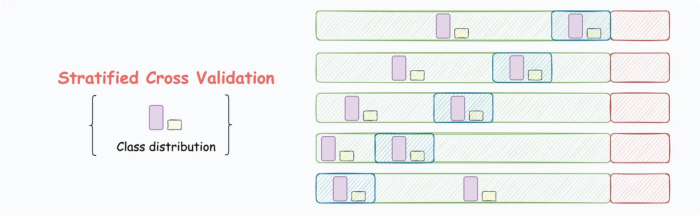
Model Comparison Workflow
Once you have evaluation metrics and cross-validation set up, the typical workflow for comparing models is:
- Define candidate models - pick \(N\) (2-4?) algorithms appropriate for your data
- Compare on the same metric - F1, AUC, or whatever matters for your problem; Choose a clear criteria for establishing a winner ahead of time, ideally a single “champion” metric but could also be a more complex ruleset (e.g., best on metric A with metric B > minimum)
- Use the same data splits - ensures fair comparison across the same data splits
- For each fold (split n of k):
- (optional) Hyperparameter tuning - vary model settings (e.g., tree depth)
- Train each model on identical training sets
- Evaluate each model on identical validation sets
- Record performance metrics for this fold
- Compare models and select best - usually best mean score for champion metric, but watch out for models with high variance across folds
- Retrain selected model on full train+validation data
- Final evaluation - evaluate the chosen model on the held-out test set (touched only once)
flowchart TB
A[Setup: Define models, metric, hold out test, split into k folds]
A --> F1 & F2 & Fdots & Fk
subgraph FoldRow[" "]
direction LR
F1[Fold 1]
F2[Fold 2]
Fdots[...]
Fk[Fold k]
end
F1 --> LR & RF & XGB
subgraph Fold1Box[" "]
LR[Logistic Regression] --> LR1[Train] --> LR2[Eval] --> LR3[Record]
RF[Random Forest] --> RF1[Train] --> RF2[Eval] --> RF3[Record]
XGB[XGBoost] --> XGB1[Train] --> XGB2[Eval] --> XGB3[Record]
end
F2 -.-> R2[...]
Fdots -.-> Rdots[...]
Fk -.-> Rk[...]
LR3 & RF3 & XGB3 --> Avg[Average scores per model]
R2 & Rdots & Rk -.-> Avg
Avg --> Select[Select best model]
Select --> Retrain[Retrain best on ALL train+val]
Retrain --> Final[Evaluate on test set]
style FoldRow fill:none,stroke:noneCode Snippet: Comparing Multiple Models
from sklearn.model_selection import cross_val_score, StratifiedKFold
from sklearn.linear_model import LogisticRegression
from sklearn.ensemble import RandomForestClassifier
from xgboost import XGBClassifier
## Define models to compare
models = {
'Logistic Regression': LogisticRegression(max_iter=1000),
'Random Forest': RandomForestClassifier(n_estimators=100),
'XGBoost': XGBClassifier(n_estimators=100, verbosity=0)
}
## Use same CV splitter for fair comparison
cv = StratifiedKFold(n_splits=5, shuffle=True, random_state=42)
## Compare models
for name, model in models.items():
scores = cross_val_score(model, X, y, cv=cv, scoring='f1')
print(f"{name}: F1 = {scores.mean():.3f} (+/- {scores.std() * 2:.3f})")LIVE DEMO
Quick Supervised Model Overview
Let’s look at a few tools that you should get a lot of use out of:
Logistic Regression shouldn’t be overlooked! It’s not as new as some other models, but it’s simple and works.
Random Forest is an ensemble model that makes many decision trees using bagging, then takes a simple vote across them to assign a class
XGBoost is another ensemble and arguably the most widely used (and useful) algorithm in tabular ML (it can do regression, classification, and julienne fries!)
Deep Learning uses artificial neural networks with multiple layers to learn complex patterns from data. These models have performed well in a variety of tasks: image recognition, speech recognition, and natural language processing.
Deep Learning models may also be used in unsupervised settings
Logistic Regression
Logistic regression works similarly to linear regression but uses a sigmoid curve that squeezes our straight line into an S-curve. Note that logistic regression actually “fits” by training linear-like terms inside a more complex function.
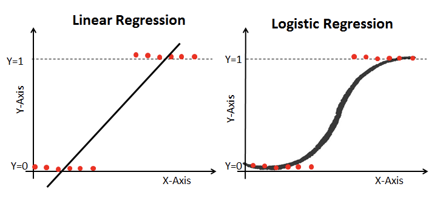
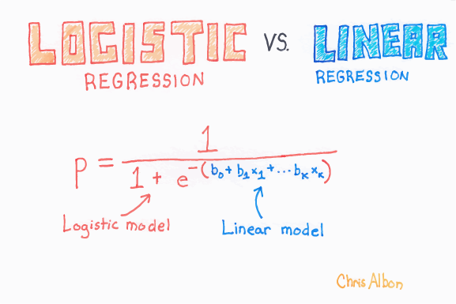
Additionally, it uses log loss (also called cross-entropy loss: a cost that measures how far predicted probabilities are from the true labels and penalizes confident wrong predictions more than uncertain ones) in place of our usual mean-squared error cost function. This provides a convex curve for approximating variable weights using gradient descent.

Reference Card: LogisticRegression
| Component | Details |
|---|---|
| Function | sklearn.linear_model.LogisticRegression() |
| Purpose | Linear model for classification (binary or multinomial) |
| Key Parameters | • penalty: Regularization (‘l2’, ‘l1’, ‘elasticnet’)• C: Inverse regularization strength (smaller = stronger)• solver: Optimization algorithm• max_iter: Max iterations for convergence |
| Key Methods | .fit(), .predict(), .predict_proba() |
Code Snippet: Logistic Regression
from sklearn.linear_model import LogisticRegression
X = [[1, 2], [2, 3], [3, 4]]
y = [0, 1, 0]
model = LogisticRegression().fit(X, y)
print(model.predict([[2, 2]])) # Predicts class labelRandom Forest
Each of the steps can be tweaked, but the general flow goes:
- Bagging (Bootstrap AGGregating) - create k random samples (with replacement) from the dataset
- Grow trees - individual decision trees are constructed by choosing the best features and cutpoints to separate the classes
- Classify - instances are run through all trees and assigned a class by majority vote
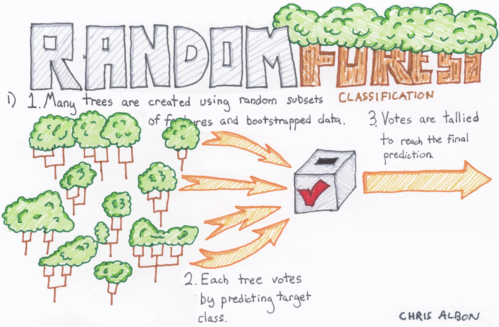
Reference Card: RandomForestClassifier
| Component | Details |
|---|---|
| Function | sklearn.ensemble.RandomForestClassifier() |
| Purpose | Ensemble of decision trees for classification |
| Key Parameters | • n_estimators: Number of trees (default 100)• max_depth: Maximum tree depth• min_samples_split: Min samples to split a node• max_features: Features to consider per split |
| Attributes | .feature_importances_ - importance of each feature |
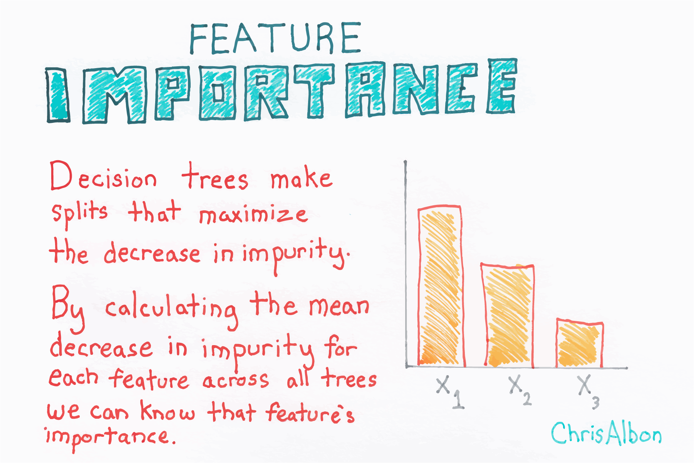
Code Snippet: Random Forest
from sklearn.ensemble import RandomForestClassifier
X = [[1, 2], [2, 3], [3, 4], [4, 5]]
y = [0, 1, 0, 1]
model = RandomForestClassifier(n_estimators=10).fit(X, y)
print(model.predict([[2, 2]]))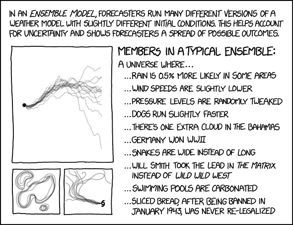
XGBoost
XGBoost stands for Extreme Gradient Boosting. Like other tree algorithms, XGBoost considers each instance with a series of if statements, resulting in a leaf with associated class assignment scores. Where XGBoost differs is that it uses gradient boosting to focus on weak-performing areas of the previous tree.
- Boosting - sequentially choosing models by minimizing errors from previous models while increasing the influence of high-performing models; i.e., each model tries to improve where the last was wrong
- Gradient boosting - a stagewise additive algorithm sequentially adding trees to improve performance measured by a loss function until some threshold is met. It’s a greedy algorithm prone to overfitting but often proves useful when focused on poor-performing areas
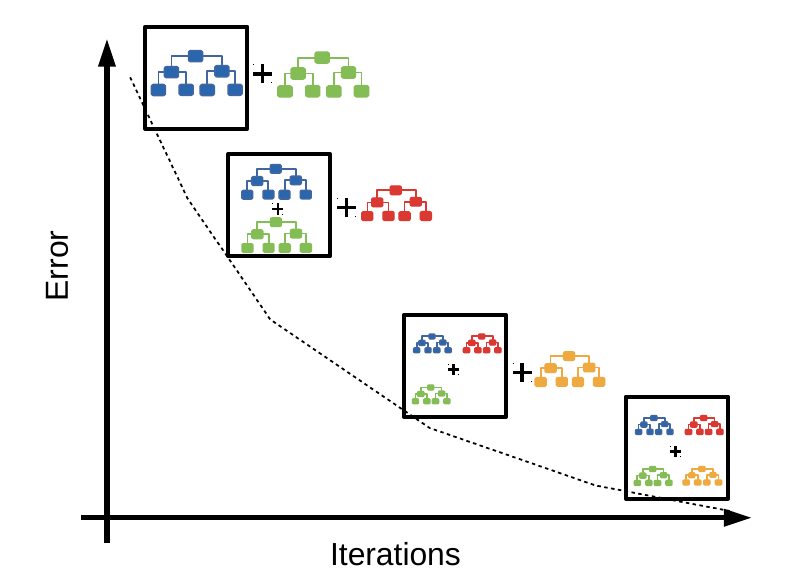
Reference Card: XGBClassifier
| Component | Details |
|---|---|
| Function | xgboost.XGBClassifier() |
| Purpose | Gradient boosting implementation for classification |
| Key Parameters | • n_estimators: Number of boosting rounds• learning_rate: Step size shrinkage (eta)• max_depth: Maximum tree depth• subsample: Training instance subsample ratio |
| Install | pip install xgboost |
Code Snippet: XGBoost
import xgboost as xgb
X = [[1, 2], [2, 3], [3, 4], [4, 5]]
y = [0, 1, 0, 1]
model = xgb.XGBClassifier(n_estimators=10).fit(X, y)
print(model.predict([[2, 2]]))LightGBM: A Faster Alternative
LightGBM (Light Gradient Boosting Machine) is Microsoft’s gradient boosting framework, optimized for speed and memory efficiency. It’s often faster than XGBoost, especially on large datasets.
Key differences from XGBoost:
- Leaf-wise tree growth - grows trees by choosing the leaf with max delta loss, rather than level-wise. Faster but can overfit on small datasets
- Histogram-based splitting - bins continuous features into discrete bins for faster training
- Native categorical support - handles categorical features directly without one-hot encoding
Reference Card: LGBMClassifier
| Component | Details |
|---|---|
| Function | lightgbm.LGBMClassifier() |
| Purpose | Fast gradient boosting for classification |
| Key Parameters | • n_estimators: Number of boosting rounds• learning_rate: Step size shrinkage• num_leaves: Max number of leaves per tree• max_depth: Limit tree depth (-1 for no limit) |
| Install | pip install lightgbm |
Code Snippet: LightGBM
from lightgbm import LGBMClassifier
X = [[1, 2], [2, 3], [3, 4], [4, 5]]
y = [0, 1, 0, 1]
model = LGBMClassifier(n_estimators=10, verbosity=-1).fit(X, y)
print(model.predict([[2, 2]]))When to use which?
- XGBoost - well-established, extensive documentation, Kaggle competitions
- LightGBM - faster training, lower memory, good for large datasets
- Both are excellent choices for tabular data classification
Deep Learning
Deep learning is a subfield of machine learning that uses artificial neural networks with multiple layers to learn complex patterns from data. These models use back-propagation to adjust the weights in each layer during training, allowing them to model very large and complex datasets.
Deep learning models are especially useful for handling large datasets with high dimensionality, and they can be used for both supervised and unsupervised learning tasks. However, they often require a large amount of data and computation power to train effectively.
- Artificial neural networks - a computational model inspired by biological neural networks
- Deep neural networks - an ANN with more than one hidden layer
- Convolutional neural networks - designed for image and video recognition
- Recurrent neural networks - designed for sequence data
More on neural networks later in the course…
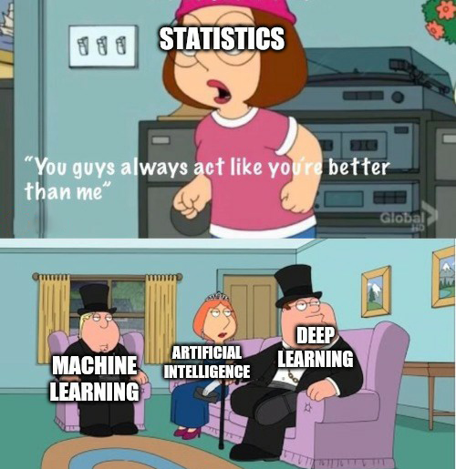
Reference Card: Keras Sequential Model
| Component | Details |
|---|---|
Sequential() |
Linear stack of neural network layers |
Dense(units, activation) |
Fully connected layer |
model.compile() |
Configure for training (optimizer, loss, metrics) |
| Common Activations | ‘relu’, ‘sigmoid’, ‘softmax’, ‘tanh’ |
Code Snippet: Simple Neural Network
from tensorflow import keras
from tensorflow.keras import layers
model = keras.Sequential([
layers.Dense(8, activation='relu', input_shape=(2,)),
layers.Dense(1, activation='sigmoid')
])
model.compile(optimizer='adam', loss='binary_crossentropy')
model.fit(X_train, y_train, epochs=10)Unsupervised Models (Further Reading)
Unsupervised models are used when you don’t have labeled data. While this course focuses on supervised classification, it’s worth knowing what’s available:
- Clustering: grouping points based on similarities/differences; e.g., K-means, hierarchical clustering
- Association: reveals relationships between variables; e.g., Apriori, F-P Growth
- Dimensionality reduction: reduces the inputs to a smaller size; e.g., PCA, t-SNE, autoencoders
LIVE DEMO
How Models Fail
Even the best models can fail if the data is messy, the problem is hard, or the world changes. Common failure modes include:
- Bad or inconsistent labels (garbage in, garbage out!)
- Underfitting (model too simple) or overfitting (model too complex)
- Dataset shift (data changes between training and real-world use)
- Hidden confounders (Simpson’s paradox)
- Imbalanced or “troublesome” classes
Labeling
Oh, labeling…
Labeling issues can arise when the data is not labeled correctly or consistently, which can lead to biased or inaccurate models. Examples of labeling issues include:
- Mislabeling: Labels that are assigned to data points are incorrect.
- Ambiguous labeling: Labels that are assigned to data points are not clear or specific.
- Inconsistent labeling: Labels that are assigned to similar data points are not the same
Fit
A model may fail to fit the data in one of two ways: under-fitting or over-fitting:
Under-fitting: The model fails to capture the differences between the classes. The model may be too simple, lack the necessary features, or the classes may not easily divide based on existing data.
Over-fitting: The model fits the training data too closely, leading to poor generalization. This can be the case when the model is overly complex or the data may have “too many features”.
Note: With enough variables you can build a perfect predictor for anything (at least in the training set). That doesn’t mean the model will perform well in the wild
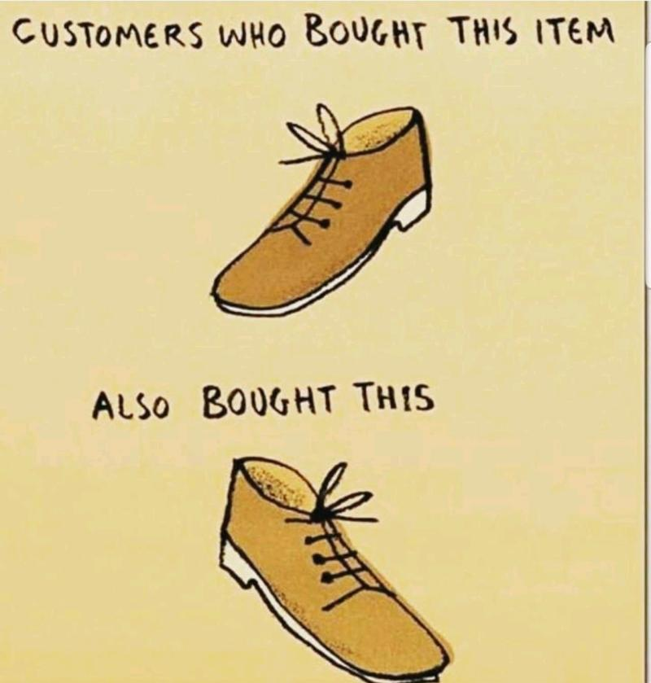
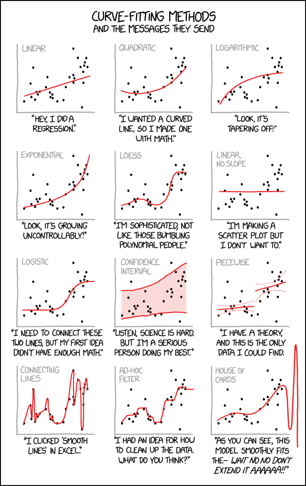
Dataset Shift
Dataset shift occurs when the distribution of the data changes between the training and test sets. Dataset shift can be divided into three types:
- Covariate Shift: A change in the distribution of the independent variables between the training and test sets.
- Prior Probability Shift: A change in the distribution of the target variable between the training and test sets.
- Concept Shift: A change in the relationship between the independent and target variables between the training and test sets.
Training data (Q2 2017): “Fidget spinners are the future!”
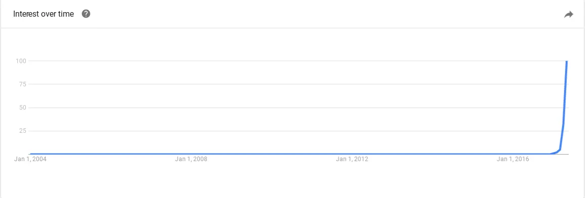
Production data (2018+): “…nevermind”
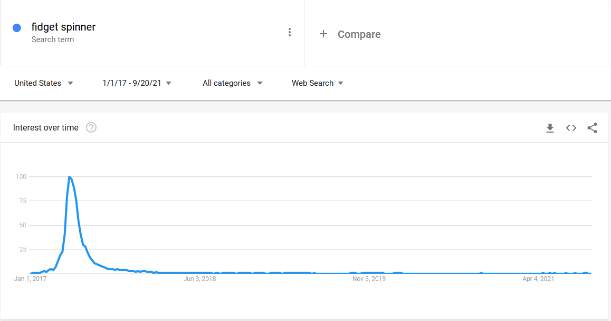
Simpson’s Paradox
Simpson’s paradox occurs when a trend appears in several different groups of data, but disappears or reverses when these groups are combined. It is a common problem in statistics and machine learning that can occur when there are confounding variables that affect the relationship between the independent and dependent variables.
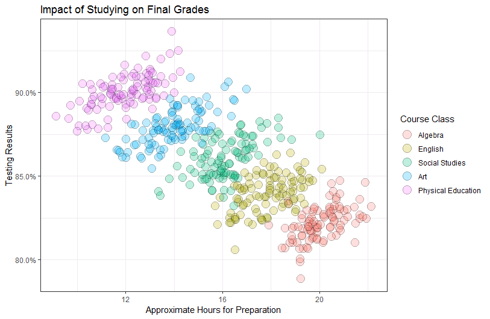
Troublesome Classes
Certain classes or categories in a dataset may be more difficult to classify accurately than others. This can be due to imbalanced class distribution, noisy data, or other factors. Identifying and addressing troublesome classes is an important step in building effective classification models.
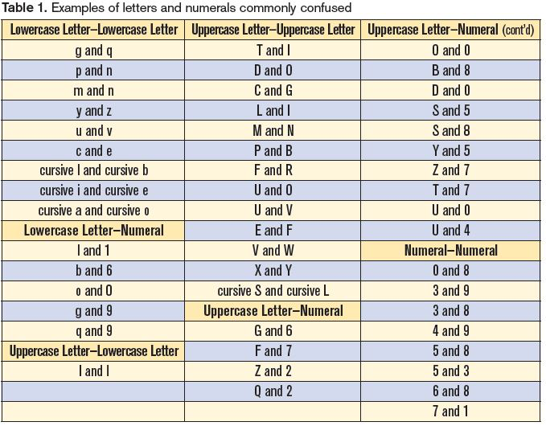

Model Interpretation
Understanding why a model makes its predictions is crucial in health data science—especially when decisions impact patient care.
SHAP Values for Feature Importance
SHAP (SHapley Additive exPlanations) assigns each feature an importance value for a particular prediction, based on cooperative game theory. SHAP provides more rigorous explanations than simpler methods but takes longer to compute.
Reference Card: SHAP
| Component | Details |
|---|---|
TreeExplainer(model) |
Explainer optimized for tree-based models |
explainer.shap_values(X) |
Compute SHAP values for data |
summary_plot() |
Visualize global feature importance |
dependence_plot() |
Show feature interactions |
| Install | pip install shap |
Code Snippet: SHAP
import shap
import xgboost as xgb
import pandas as pd
X = pd.DataFrame({'age': [50, 60], 'bp': [120, 140]})
y = [0, 1]
model = xgb.XGBClassifier().fit(X, y)
explainer = shap.TreeExplainer(model)
shap_values = explainer.shap_values(X)
shap.summary_plot(shap_values, X, plot_type="bar")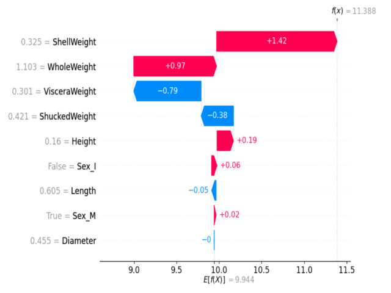
Example SHAP summary plot: Each dot shows a feature’s impact on a prediction. Color indicates feature value (red=high, blue=low).
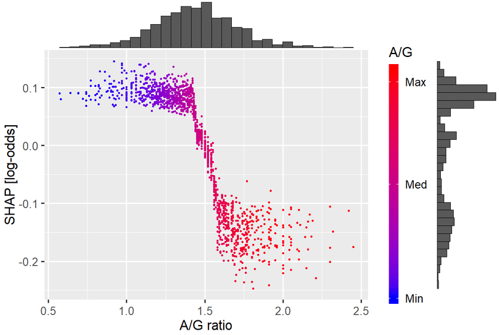
Example SHAP dependence plot: Shows how the effect of one feature depends on the value of another feature.
eli5 for Model Inspection
eli5 is a Python library that helps demystify machine learning models by showing feature weights and decision paths.
Reference Card: eli5
| Component | Details |
|---|---|
show_weights() |
Display feature importances (for notebooks/HTML) |
explain_weights() |
Return explanation object for programmatic use (e.g. format_as_html()) |
show_prediction() |
Explain a single prediction |
| Key Parameters | • estimator: Trained model• feature_names: List of feature names• top: Number of top features to show |
| Install | pip install eli5 |
Code Snippet: eli5
import eli5
from sklearn.ensemble import RandomForestClassifier
X = [[1, 2], [3, 4], [5, 6]]
y = [0, 1, 0]
model = RandomForestClassifier().fit(X, y)
eli5.show_weights(model, feature_names=['feature1', 'feature2'])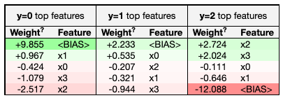
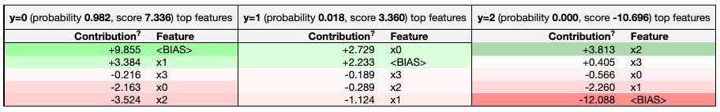
Practical Data Preparation
Preparing your data is just as important as choosing the right model. Good data prep can make or break your results—especially with real-world health data, which is often messy, imbalanced, and full of categorical variables.
Feature Scaling with StandardScaler
Many algorithms (especially logistic regression, SVMs, and neural networks) perform better when features are on similar scales. StandardScaler transforms features to have mean=0 and standard deviation=1.
Reference Card: StandardScaler
| Component | Details |
|---|---|
| Function | sklearn.preprocessing.StandardScaler() |
| Purpose | Standardize features by removing the mean and scaling to unit variance |
| Key Methods | • fit(X): Compute mean and std from training data• transform(X): Apply standardization• fit_transform(X): Fit and transform in one step• inverse_transform(X): Reverse the transformation |
| When to Use | Logistic regression, SVM, neural networks, K-means, PCA |
Code Snippet: StandardScaler
from sklearn.preprocessing import StandardScaler
import numpy as np
## Sample data with different scales
X = np.array([[50, 180000], [65, 220000], [35, 150000]]) # Age, Income
scaler = StandardScaler()
X_scaled = scaler.fit_transform(X)
print("Original:\n", X)
print("Scaled:\n", X_scaled)
## Each column now has mean≈0, std≈1LabelEncoder for Target Variables
Some classifiers (like XGBoost) require target labels to be consecutive integers starting from 0. LabelEncoder transforms arbitrary labels like [5, 7, 9] into [0, 1, 2].
Reference Card: LabelEncoder
| Component | Details |
|---|---|
| Function | sklearn.preprocessing.LabelEncoder() |
| Purpose | Encode target labels as integers 0, 1, 2, … |
| Key Methods | • fit(y): Learn label mapping• transform(y): Apply encoding• fit_transform(y): Fit and transform in one step• inverse_transform(y): Convert back to original labels |
| When to Use | XGBoost with multi-class labels, or when algorithms require 0-indexed labels |
Code Snippet: LabelEncoder
from sklearn.preprocessing import LabelEncoder
## Original labels aren't 0-indexed
y = [5, 7, 9, 5, 7, 9]
encoder = LabelEncoder()
y_encoded = encoder.fit_transform(y)
print(y_encoded) # [0, 1, 2, 0, 1, 2]
## To decode back:
y_original = encoder.inverse_transform(y_encoded)
print(y_original) # [5, 7, 9, 5, 7, 9]OneHotEncoder for Categorical Variables
Many machine learning models require all input features to be numeric. One-hot encoding transforms categorical variables (like “smoker” or “blood type”) into a set of binary columns.
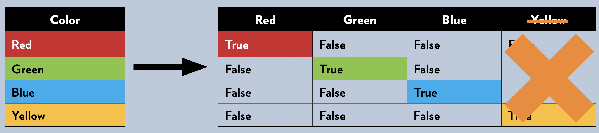
Reference Card: OneHotEncoder
| Component | Details |
|---|---|
| Function | sklearn.preprocessing.OneHotEncoder() |
| Purpose | Encode categorical features as binary columns |
| Key Parameters | • categories: Categories per feature (‘auto’)• drop: Drop category to avoid multicollinearity• sparse_output: Return sparse matrix or array• handle_unknown: How to handle unknown categories |
Code Snippet: OneHotEncoder
from sklearn.preprocessing import OneHotEncoder
import pandas as pd
df = pd.DataFrame({'smoker': ['yes', 'no', 'no', 'yes']})
encoder = OneHotEncoder(sparse_output=False, handle_unknown='ignore')
encoded = encoder.fit_transform(df[['smoker']])
print(encoded)Handling Imbalanced Classes with Evaluation Metrics
Consider metrics that penalize misclassifications unequally, like:
- F1-score: Harmonic mean of precision and recall (good out of the box, but can be weighted for class imbalance)
- Precision: Proportion of positive identifications that were actually correct
- Recall: Proportion of actual positives that were identified correctly
Handling Imbalanced Data with SMOTE
In health data, one class (like “disease present”) is often much rarer than the other. SMOTE (Synthetic Minority Over-sampling Technique) creates synthetic examples of the minority class to balance the dataset.
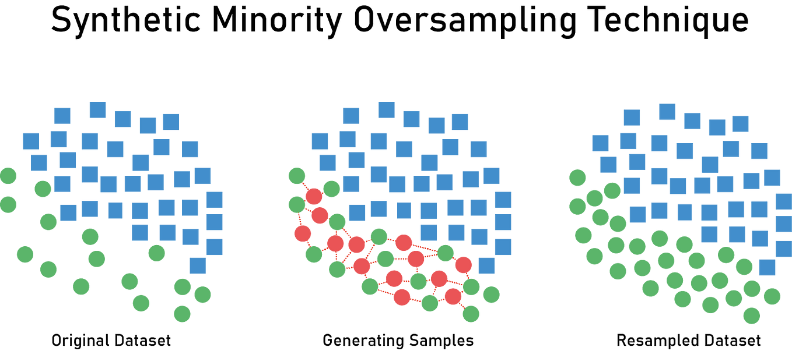
Reference Card: SMOTE
| Component | Details |
|---|---|
| Function | imblearn.over_sampling.SMOTE() |
| Purpose | Oversample minority class with synthetic samples |
| Key Parameters | • sampling_strategy: Target class distribution• k_neighbors: Neighbors used for interpolation• random_state: For reproducibility |
| Install | pip install imbalanced-learn |
Code Snippet: SMOTE
from imblearn.over_sampling import SMOTE
from sklearn.datasets import make_classification
import collections
X, y = make_classification(n_samples=100, weights=[0.9, 0.1], random_state=42)
print("Original:", collections.Counter(y))
smote = SMOTE(random_state=42)
X_resampled, y_resampled = smote.fit_resample(X, y)
print("Resampled:", collections.Counter(y_resampled))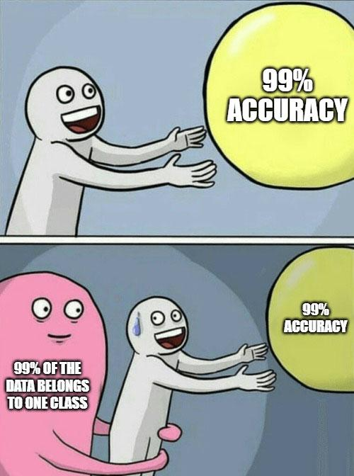
Feature Engineering
Good features often matter more than the choice of algorithm. Feature engineering combines domain knowledge with data transformation to create inputs that help models learn.
Domain-Specific Feature Derivations
The best features often come from domain knowledge—knowing what matters in health data:
- Calculating BMI from height and weight
- Deriving heart rate variability from RR intervals
- Creating a “polypharmacy” flag for patients on multiple medications
- Age buckets for risk stratification
Automated Feature Engineering (Further Reading)
For complex relational datasets, libraries like featuretools can automatically generate features using Deep Feature Synthesis. This is especially useful for time series and multi-table data.
When and How to Combine Techniques
Often, you’ll need to use several data prep techniques together. The order is crucial to prevent data leakage—when information from the test set accidentally influences training, leading to overly optimistic performance estimates.
Recommended Order (opinionated):
- Split data FIRST: Hold out the test set before any preprocessing. Use
stratify=yto preserve class ratios. - Encode categorical variables: Fit encoder only on training data, then transform both train and validation/test
- Engineer additional features:
- Always use subject matter expertise to transform or combine conceptually consistent columns that may be more predictive or better fit (e.g., linear) for your model
- Use dimension reduction techniques like Principal Component Analysis to combine columns for better predictive value and to reduce multicollinearity
- Consider automated feature engineering as an exploratory step but beware that it is a kind of modeling and, just like any model, it is susceptible to overfitting. Also, you’re going to have to explain whatever you did and the relationships in your analysis.
- Scale/normalize features (if needed): Fit scaler only on training data, then transform both
- Balance classes (optional, e.g., SMOTE): Apply only to training set—never validation or test!
Why split first? If you fit your scaler or encoder on the full dataset before splitting, your model “sees” test data statistics during training. This leaks information and makes your model appear better than it really is.
If Not Balancing: Use evaluation metrics that account for imbalance:
- Confusion Matrix: Performance per class
- Precision, Recall, F1-score: Especially for minority class
- ROC AUC: Or Precision-Recall AUC for imbalanced data